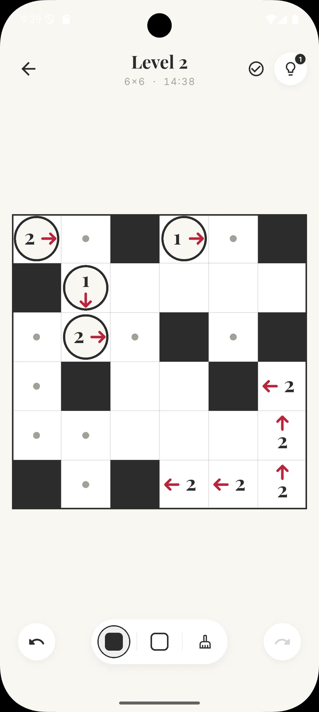
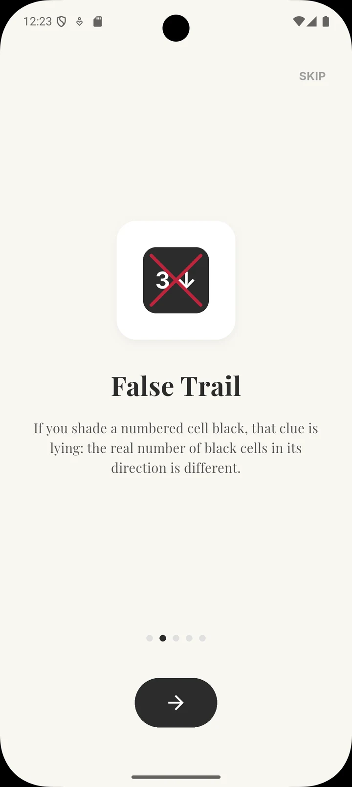
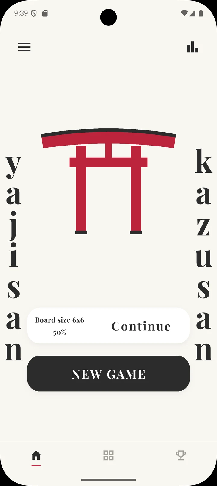

project 03 / 03
Yajisan Kazusan
A mobile version of Yajisan-Kazusan, a Japanese logic puzzle with arrow clues. Every level has exactly one solution and can be solved by logic alone, with no guessing.
- Flutter
- Dart
- Riverpod
- freezed



The puzzle
You shade cells on a grid. Shaded cells can't touch side by side, and all the unshaded cells have to stay connected. Each clue says how many shaded cells lie in the direction of its arrow.
The twist: if you shade a clue, it becomes a liar, so the real count in its direction must be anything but the number it shows. Deciding which clues to trust is the whole game, and I love puzzles like that.
What it does
- Levels on every board size from 5×5 to 12×12, played in order.
- Hints that reveal a cell when you get stuck: you start with 3 and earn one more for every solved level. Plus a step-by-step tutorial for first-time players.
- Achievements and statistics to keep track of your progress.
- A timer, undo and redo, and three tools: shade a cell, mark it as white with a dot, or erase it. The check button highlights every cell that breaks a rule.
- Autosave for every board size, so you can leave a level halfway and pick it up later.
- Sound and haptic feedback.
- The whole game in English and Polish, switchable in the settings.
Under the hood
The levels aren't drawn by hand, and they aren't generated on the phone either: they're generated in advance and ship with the app. The generator picks a random valid solution, puts a clue on every cell, and then removes clues one by one, the simplest first, as long as the board can still be solved by logic. What's left is a minimal set of clues, topped up to a target share of clue cells for each board size.
The solver never guesses. It applies the simple rules until nothing changes, then tries single cells: assume a colour, look for a contradiction, and if there is one, the cell must be the other colour. A board is accepted only when this fills in every cell, which also means it has exactly one solution. The number of these trial steps is the difficulty measure, and the generator asks for more of them on bigger boards: at least 1 on 5×5, up to 4 on 10×10 and above.
Game state is managed with Riverpod and the models are immutable classes generated with freezed. The board is drawn with a custom painter rather than a grid of widgets.
What's next
- Releasing the game on Google Play.